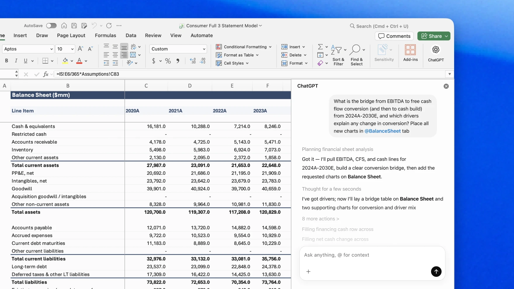

ChatGPT for Excel: business acceleration and sovereignty requirements
The lancement de ChatGPT for Excel transforme un outil déjà omniprésent en interface IA de masse. Pour the companies, l'opportunité est forte, mais the sovereignty dépend de décisions précises sur the data, the droits d'accès and the traçabilité of actions.

1. Pourquoi cette news compte for l'sovereign AI
Excel reste l'un of points d'entrée majeurs of data financières, commerciales and opérationnelles. Ajouter un assistant IA dans ce contexte augmente immédiatement the productivité, mais élargit aussi the surface de risque: extraction involontaire de data sensibles, propagation d'erreurs à grande échelle and perte de visibilité sur the transformations effectuées.
2. Impact concret sur the équipes IT and compliance
L'enjeu n'est pas de bloquer l'usage, mais de le cadrer. Une strategy sovereign impose de classifier the types de fichiers autorisés, de segmenter the permissions par rôle and de journaliser the opérations critiques. Sans ces contrôles, l'outil devient rapide mais difficilement auditable.
3. Décisions à prendre dans the 30 jours
Trois mesures donnent un effet immédiat: définir une politique d'usage of data tableur par niveau de sensibilité, déployer un pilote encadré sur un périmètre métier limité, and instaurer un mécanisme de revue mensuelle of prompts/résultats à risque. Cette approche conserve the vitesse d'exécution tout en protégeant the governance.
Lancer un pilote ChatGPT for Excel with règles d'accès, journalisation and critères de compliance avant généralisation.
Structure a sovereign pilot